This document covers the data management systems in agent-swarm-kit, including storage with embedding-based search capabilities, client and shared state management, session memory handling, and data persistence patterns. It provides guidance on configuring these systems and best practices for managing data across multi-agent applications.
For information about building multi-agent workflows that use these storage and state systems, see Building Multi-Agent Systems. For details on tool integration that may store or retrieve data, see Tool Integration.
The framework provides two primary storage systems: client-specific storage and shared storage, both with embedding-based search capabilities.

Client Storage Operations
The StorageUtils class provides client-scoped storage operations with embedding search:
| Method | Purpose | Validation |
|---|---|---|
take() |
Search and retrieve items | Client session, agent-storage registration |
upsert() |
Insert or update items | Client session, agent-storage registration |
remove() |
Delete items by ID | Client session, agent-storage registration |
get() |
Retrieve item by ID | Agent-storage registration |
list() |
List all items with optional filter | Agent-storage registration |
createNumericIndex() |
Generate sequential index | Agent-storage registration |
clear() |
Remove all items | Client session, agent-storage registration |
Shared Storage Operations
The SharedStorageUtils class provides system-wide storage without client scoping:
| Method | Purpose | Validation |
|---|---|---|
take() |
Search and retrieve items | Storage name validation |
upsert() |
Insert or update items | Storage name validation |
remove() |
Delete items by ID | Storage name validation |
get() |
Retrieve item by ID | Storage name validation |
list() |
List all items with optional filter | Storage name validation |
clear() |
Remove all items | Storage name validation |
The framework provides both client-specific and shared state management with functional update patterns.

Client State Management
The StateUtils class manages client-scoped state with these operations:
getState() - Retrieves current state value for a client and state namesetState() - Updates state using either direct value or dispatch functionclearState() - Resets state to initial valueShared State Management
The SharedStateUtils class manages system-wide state:
getState() - Retrieves current shared state valuesetState() - Updates shared state using direct value or dispatch functionclearState() - Resets shared state to initial valueBoth state systems support functional updates where you can pass a function that receives the previous state and returns the new state:
Session memory provides temporary, non-persistent storage scoped to individual client sessions.

Session Memory Operations
The SchemaUtils class provides session memory management:
writeSessionMemory() - Stores data for a client session with optional persistencereadSessionMemory() - Retrieves data for a client session, loading from persistence if configuredThe MemorySchemaService provides the underlying memory operations:
hasValue() - Checks if session has memory datawriteValue() - Merges new data with existing session memoryreadValue() - Retrieves session memory datadispose() - Cleans up session memory on terminationMemory Persistence Configuration
Memory persistence is controlled by the CC_PERSIST_MEMORY_STORAGE configuration flag. When enabled, session memory is automatically saved to and loaded from JSON files.
All persistent data in the framework is stored as JSON files in the file system, managed through the persistence layer.

Persistence Configuration
Key configuration options control persistence behavior:
CC_PERSIST_ENABLED_BY_DEFAULT - Controls whether persistence is enabled by defaultCC_PERSIST_MEMORY_STORAGE - Enables session memory persistence./logs/data/ directoryQueued Persistence Operations
The framework uses queued operations to prevent race conditions during concurrent writes. The SchemaUtils class demonstrates this pattern with its private queued write function for memory persistence.
Agent Storage Registration Storage must be registered with agents before use. The validation system ensures agents can only access their registered storage:
// Storage validation occurs in all storage operations
if (!swarm.agentValidationService.hasStorage(agentName, storageName)) {
throw new Error(`agent-swarm StorageUtils ${storageName} not registered in ${agentName}`);
}
Embedding Search Configuration Storage operations support optional relevance scoring for embedding-based search:
take() method accepts optional score parameter for filtering resultsFunctional State Updates Use dispatch functions for complex state updates:
// Direct value update
await State.setState(newValue, { clientId, agentName, stateName });
// Functional update
await State.setState(async (prevState) => {
return { ...prevState, newProperty: computedValue };
}, { clientId, agentName, stateName });
State Scoping Choose between client-specific and shared state based on data scope:
StateUtils for client-specific data that should be isolated per sessionSharedStateUtils for system-wide data shared across all clientsTemporary Data Storage Use session memory for temporary data that doesn't need persistence:
// Store temporary session data
const sessionData = await Schema.writeSessionMemory(clientId, { tempValue: data });
// Retrieve session data
const sessionData = await Schema.readSessionMemory(clientId);
Data Serialization
The serialize() method helps format data for display or logging:
const formattedData = Schema.serialize(data, {
mapKey: (key) => key.toUpperCase(),
mapValue: (key, value) => value.slice(0, 100)
});
Concurrent Operations The framework handles concurrent operations through:
Memory Management
dispose() methods to explicitly clean up resources